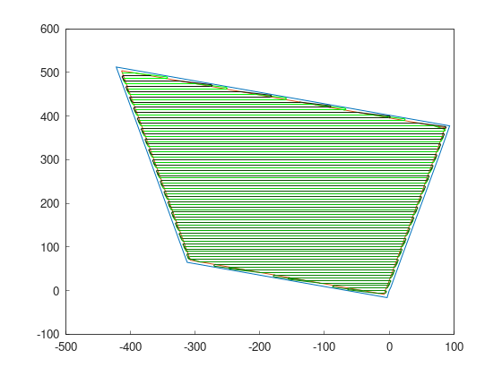

Quick Start
This page takes you from an installed library to a complete coverage path in a few lines. If you haven’t installed Fields2Cover yet, start with the installation guide.
The high-level functions planCovRoute and planCovPath run the whole
pipeline — headland generation, swath generation, route planning and path
planning — with sensible defaults. The tutorials show how
to run each module separately and swap the algorithms.
The example field test1.xml is in the data folder of the
repository.
#include "fields2cover.h"
int main() {
F2CField field = f2c::Parser::importFieldGml("data/test1.xml");
F2CRobot robot(2.0, 6.0, 0.5, 0.2);
F2CPath path = f2c::planCovPath(robot, field, false);
f2c::Visualizer::figure();
f2c::Visualizer::plot(field.getCellsAbsPosition());
f2c::Visualizer::plot(path);
f2c::Visualizer::show();
return 0;
}
import fields2cover as f2c
field = f2c.Parser().importFieldGml("data/test1.xml")
robot = f2c.Robot(2.0, 6.0, 0.5, 0.2)
path = f2c.planCovPath(robot, field, False)
f2c.Visualizer.figure()
f2c.Visualizer.plot(field.getCellsAbsPosition())
f2c.Visualizer.plot(path)
f2c.Visualizer.show()
The F2CRobot here is 2 m wide and covers a 6 m wide swath, with a maximum
curvature of 0.5 m⁻¹ and a maximum curvature change of 0.2 m⁻². The result is
a path that covers the whole field:
{kind=link}

To compile the C++ example, link against Fields2Cover in your
CMakeLists.txt:
find_package(Fields2Cover REQUIRED)
target_link_libraries(<your_target> Fields2Cover)